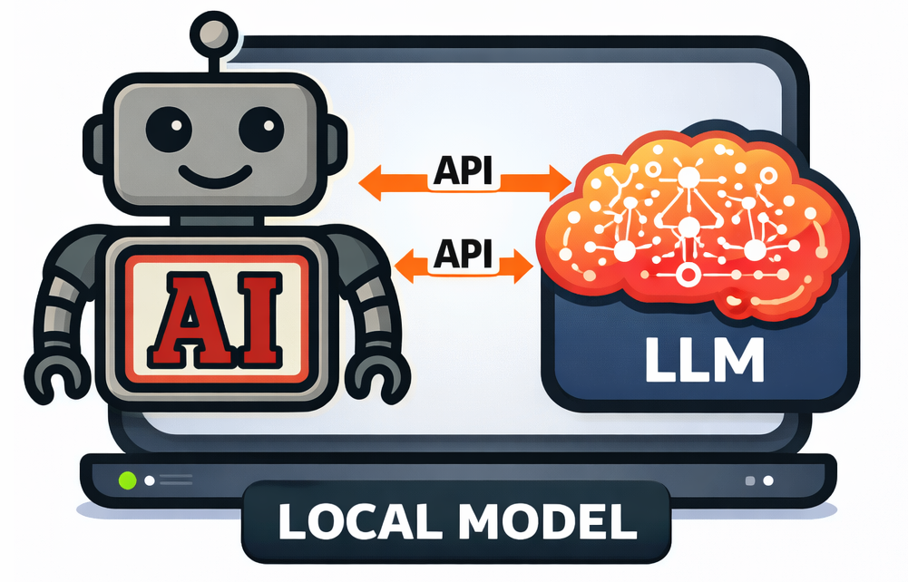
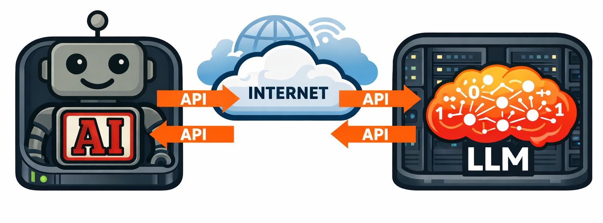
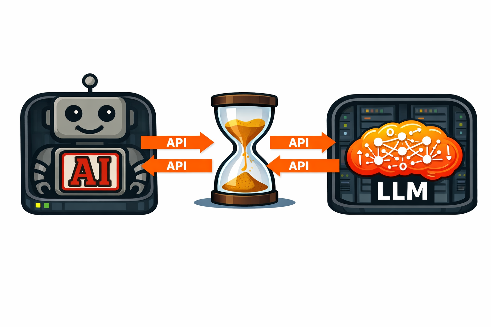

class: center, middle, inverse count: false # Working with the API --- # From Theory to Practice Module 2 gave you the mental model. This lecture makes it concrete — the mechanics of working with LLMs through their APIs. - **Describe** the anatomy of an API call — what you send, what you get back - **Explain** system, user, and assistant message roles - **Understand** streaming vs. non-streaming responses - **Implement** error handling patterns (retries, rate limits, timeouts) ??? Module 3 shifts from conceptual to practical. These objectives take students from "I understand agents" to "I can make an LLM do something." --- # Where Is the LLM? Option 1: Local Models .split-left[ Run models directly on your own hardware. Open-weight models you download and serve yourself. - **Full control** — no API keys, no usage fees, no data leaving your machine - **Limited by your hardware** — smaller models, slower inference - **Good for experimentation** — privacy-sensitive work, offline use, fine-tuning <div style="display: flex; align-items: center; gap: 1.5em; margin-top: 1em;"> <img src="ollama.png" style="height:50px;"/> <img src="deepseek.png" style="height:50px;"/> </div> ] .split-right[ <p></p> ] <div class="clear"></div> ??? Brief orientation — students should know local models exist and when they make sense. Ollama is the easiest on-ramp. We won't use local models much in this course, but students should understand the option. --- # Where Is the LLM? Option 2: Provider-Hosted Models .split-left[ Models hosted by providers like Anthropic, OpenAI, and Google. You send requests over HTTPS and pay per token. - **Most capable models available** — Opus, GPT-4, Gemini - **No hardware requirements** — runs on the provider's infrastructure - **Pay-per-use** — cost scales with usage, not upfront investment - **This is how most agents are built today** ] .split-right[ <p></p> <div style="display: flex; align-items: center; justify-content: center; gap: 1em;"> <img src="claude.png" style="height:70px;"/> <img src="gemini.png" style="height:70px;"/> <img src="grok.png" style="height:70px;"/> </div> ] <div class="clear"></div> ??? This is the model we'll use throughout the course. The API call pattern students learn next applies to all hosted providers — the specifics differ but the structure is the same. --- class: center, middle, inverse # Anatomy of an API Call --- # API Example .split-left[ ```python response = client.messages.create( model="claude-sonnet-4-6", max_tokens=1024, system="You are a helpful coding assistant.", messages=[ {"role": "user", "content": "What does map() do?"} ] ) ``` ] .split-right[ **`model`** — Which model. Different capabilities, context sizes, speeds, costs. **`max_tokens`** — Output budget. Too low = cut off. Too high = waste money. **`system`** — Identity, tools, behavioral guidelines. Foundational context. **`messages`** — Conversation history. An array of role/content pairs. This is the context window in practice. ] <div class="clear"></div> ??? [2 min] Walk through each parameter alongside the code. The key connection: messages = context window. Students will manage this array in every agent they build. --- # Message Roles .split-left[ ```python response = client.messages.create( model="claude-sonnet-4-6", max_tokens=1024, system="You are a helpful coding assistant.", messages=[ {"role": "user", "content": "What does map() do?"} ] ) ``` ] .split-right[ **`system`** — Instructions that frame everything. Set once, rarely changed. **`user`** — Messages from the human or your orchestration code. Requests, questions, instructions. **`assistant`** — The model's own previous responses. Maintains conversational continuity. .info[The messages array **is** the context window. You manage it yourself — appending user messages, assistant responses, and tool results.] ] <div class="clear"></div> ??? [2 min] Emphasize that "user" role isn't always a human — agent orchestration code also sends "user" messages (tool results). This will make more sense when they see tool calling. --- # The Response Object What comes back from the API: ```python response.content # The model's text (or tool use request) response.stop_reason # Why it stopped: "end_turn", "max_tokens", "tool_use" response.usage # Token counts: input_tokens, output_tokens ``` -- **`stop_reason`** is critical for agents: - `end_turn` — the model is done talking - `tool_use` — the model wants to call a tool (your signal to execute and continue the loop) - `max_tokens` — response was cut off (you may need to increase the budget) -- **`usage`** tells you how many tokens were consumed — for cost tracking and detecting context limits. ??? [2 min] The stop_reason → agent loop connection is the key insight. tool_use is the mechanism that makes the agent loop work — students will see this in detail in Module 4. --- # Wait... What API Is This? .split-left[ There are many LLM APIs — Anthropic, OpenAI, Google Vertex, Cohere, Mistral — and SDKs in many languages: Python, JavaScript, Java, Go. Higher-level libraries like LangChain wrap multiple providers. We're using the **Anthropic API in Python**. This isn't a statement that it's the best — it's a practical choice. The concepts (messages, roles, tool calling, streaming) transfer directly to any provider. .callout[Learn one API well. The patterns are the same everywhere.] .info[You'll need an Anthropic API key to follow along. Lab 1 walks you through creating an account, generating a key, and configuring your environment.] ] .split-right[ <div style="display: flex; flex-direction: column; align-items: center; gap: 0.8em; padding-top: 1em;"> <div style="display: flex; align-items: center; justify-content: center; gap: 1.5em;"> <img src="gemini.png" style="height:90px;"/> </div> <div style="display: flex; align-items: center; justify-content: center; gap: 1.5em;"> <img src="langchain.png" style="height:90px;"/> </div> <div style="display: flex; align-items: center; justify-content: center; gap: 1.5em;"> <img src="python.png" style="height:90px;"/> <img src="javascript.png" style="height:90px;"/> </div> </div> ] <div class="clear"></div> ??? Acknowledge the ecosystem breadth. Students may wonder why we picked Anthropic — the answer is it doesn't matter much. The structural patterns are universal. We had to pick one. --- class: center, middle, inverse # Live Coding ## `hello_api.py` ??? [3-4 min] Switch to the terminal. Open hello_api.py and walk through it line by line before running. --- # Live Demo: Your First API Call .small-code[ ```python import anthropic client = anthropic.Anthropic() # Uses ANTHROPIC_API_KEY from environment response = client.messages.create( * model="claude-sonnet-4-6", * max_tokens=1024, * system="You are a helpful coding assistant.", messages=[ {"role": "user", "content": "What does map() do in Python?"} ] ) print(response.content[0].text) print(response.stop_reason) # "end_turn" print(response.usage.input_tokens) # How many tokens we sent print(response.usage.output_tokens) # How many tokens came back ``` ] .callout[Run `hello_api.py` and examine the response object — content, stop_reason, and usage. These three fields are what you'll inspect on every API call.] ??? Walk through the code, then run `python hello_api.py`. Point out: (1) the client reads the API key from the environment, (2) the response has structure, not just text, (3) usage tells you exactly what you're paying for. --- class: center, middle, inverse # Conversation History as Context --- # The Messages Array Is Everything From Lecture 2.1: "If it's not in the context, it doesn't exist." Here's what that looks like in practice: ```python messages = [ {"role": "user", "content": "What's the capital of France?"}, {"role": "assistant", "content": "The capital of France is Paris."}, {"role": "user", "content": "What's its population?"} ] ``` -- The model sees the entire conversation. It knows "its" refers to Paris because the previous exchange is in context. Remove the first two messages, and the model has no idea what "its" means. ??? [2 min] Simple example first. This is obvious for chat. The next slide shows why it gets interesting for agents. --- # How Agents Build Context Agent conversations grow with tool calls and results: .small[ ```python messages = [ {"role": "user", "content": "Fix the bug in main.py"}, {"role": "assistant", "content": "[tool_use: read_file('main.py')]"}, {"role": "user", "content": "[tool_result: contents of main.py...]"}, {"role": "assistant", "content": "I see the issue. [tool_use: edit_file(...)]"}, {"role": "user", "content": "[tool_result: file edited successfully]"}, {"role": "assistant", "content": "I've fixed the off-by-one error..."} ] ``` ] -- Every tool call and every tool result becomes a message. A single user request might generate 10, 20, 50 messages. .warning[This is why context management matters. The messages array grows and grows. Attention is finite, context degrades. We'll spend a lot of time on this.] ??? [2 min] Connect the conceptual (attention budget, context rot from Lecture 2.1) to the practical (the messages array literally getting longer with every tool call). This sets up context engineering later. --- class: center, middle, inverse # Live Coding ## `conversation.py` ??? [3-4 min] Switch to terminal. Walk through conversation.py — the chat() function, how messages accumulate, then run it. --- # Live Demo: Multi-Turn Conversation .small-code[ ```python messages = [] def chat(user_message): messages.append({"role": "user", "content": user_message}) response = client.messages.create( model="claude-sonnet-4-6", max_tokens=1024, * system="You are a concise assistant. Keep answers to 1-2 sentences.", * messages=messages ) assistant_message = response.content[0].text * messages.append({"role": "assistant", "content": assistant_message}) return assistant_message, response.usage ``` ] -- **Watch the token count grow with each turn** — the full history is re-sent every time. ??? Run conversation.py. Point out: (1) the messages array grows after each turn, (2) input tokens increase because the full history is resent, (3) "its" in turn 2 works because turn 1 is in context. Print the messages array at the end to show the full context. --- class: center, middle, inverse # Streaming and Error Handling --- # Streaming Responses By default, you send a request and wait for the complete response. But LLMs generate tokens one at a time — you can receive them as they're generated. .split-left[ Why streaming matters: - **User experience** — text appears in real time instead of a blank screen - **Time to first token** — first token in milliseconds, even if the full response takes seconds - **Agent decisions** — detect tool calls as they start, rather than waiting for the full response .info[For agents, streaming is optional. For user-facing applications, it's almost always the right choice.] ] .split-right[ <p></p> ] <div class="clear"></div> ??? [2 min] Keep it conceptual. Students don't need to implement streaming yet. They need to know it exists and why it matters. --- # What Goes Wrong API calls fail. They fail more often than you'd expect, especially under load. -- .split-left[ ### Rate Limits (429) Too many requests. Wait and retry with exponential backoff. ### Timeouts Model taking too long. Complex prompts or large contexts. Set reasonable timeouts. ] .split-right[ ### Malformed Responses Output isn't the format you expected. Text when you expected a tool call, or invalid JSON. Validate before acting. ### Overloaded (529) Service at capacity. Back off and retry — same pattern as rate limits. ] <div class="clear"></div> ??? [2 min] Students will encounter all of these errors in the lab. Name the specific HTTP codes so they recognize them. --- # The Retry Pattern A simple but essential pattern for every agent: ```python for attempt in range(max_retries): try: response = client.messages.create(...) return response except RateLimitError: wait_time = 2 ** attempt # 1s, 2s, 4s, 8s... time.sleep(wait_time) raise Exception("Max retries exceeded") ``` -- **Exponential backoff**: wait longer after each failure. Polite to the API and effective in practice. .callout[Agents that don't handle errors gracefully crash in production. Implement error handling from the start.] ??? [2 min] The retry pattern is something students will copy into every project. Show the actual code — this is one of the few patterns worth memorizing. --- # Live Demo: `retry_pattern.py` The complete retry function with proper error handling: .small-code[ ```python def call_with_retry(messages, system="", max_retries=5): for attempt in range(max_retries): try: response = client.messages.create( model="claude-sonnet-4-6", max_tokens=1024, system=system, messages=messages ) return response * except anthropic.RateLimitError: wait_time = 2 ** attempt print(f"Rate limited. Waiting {wait_time}s...") time.sleep(wait_time) * except anthropic.APIStatusError as e: * if e.status_code == 529: # Overloaded wait_time = 2 ** attempt time.sleep(wait_time) else: raise raise Exception(f"Max retries ({max_retries}) exceeded") ``` ] ??? [2 min] Walk through the retry function. Highlight: (1) RateLimitError is the most common, (2) 529 = overloaded, same treatment, (3) other errors we don't retry — a 401 means your key is wrong. The complete file is retry_pattern.py — students should keep this as a utility. --- # Key Takeaways Three things to remember from this lecture: -- **1. The API call has a clear anatomy** Model, system prompt, messages in — content, stop_reason, usage out. -- **2. The messages array is the context window** Every message, every tool result, every response — it all goes in the array. The array is everything. -- **3. Build error handling from day one** Retries with exponential backoff. Validate responses. Don't trust that the API will always work. ??? These three points are the practical foundation. Everything from here builds on this understanding. --- # Coming Up Next .info[**New to Python?** This course assumes basic Python proficiency. If you need a refresher, work through [CMPS 130: Python Programming](https://pages.ramapo.edu/~sfrees/courses/cmps130/) — it covers everything you'll need.] **Lecture 3.2: The Model Landscape** Which model should you actually use? How do you choose between Haiku, Sonnet, and Opus — or between providers entirely? And what does it all cost? ??? Brief transition. Lecture 3.2 is a shorter, practical orientation before diving back into API mechanics with temperature and sampling.